Manual do usuário · M-VAVE FM-1
User manual · M-VAVE FM-1
FMini-1 no FM-1
FMini-1 on the FM-1
Um Minimoog (modelo D) emulado no FM-1: três osciladores, ruído, filtro ladder, dois envelopes, LFO, efeitos, arpejador, sequenciador e 200 presets. Este manual explica cada botão, cada página da tela e cada parâmetro.
A Minimoog Model D emulation on the FM-1: three oscillators, noise, a ladder filter, two envelopes, an LFO, effects, an arpeggiator, a sequencer and 200 presets. This manual explains every button, every screen page and every parameter.
1Antes de começarBefore you start
O FM-1 é um controlador de 27 teclas (F3 a G5) com uma tela, quatro knobs de página, quatro knobs de controle e 14 botões. O FMini-1 o transforma num sintetizador monofônico ou polifônico de subtrativa analógica, com a mesma topologia de um Minimoog: três osciladores, um gerador de ruído, um filtro ladder de quatro polos, dois envelopes (um para o filtro e um para o volume), um LFO e quatro efeitos.
Você não precisa de nada além do FM-1 e de um cabo USB. Para tocar sons de outro equipamento, use a saída de áudio do FM-1 (ou ligue o FM-1 por USB ao computador para MIDI).
The FM-1 is a 27-key controller (F3 to G5) with a screen, four page knobs, four control knobs and 14 buttons. FMini-1 turns it into a monophonic or polyphonic analogue subtractive synth with the Minimoog's topology: three oscillators, a noise generator, a four-pole ladder filter, two envelopes (one for the filter, one for the loudness), an LFO and four effects.
You need nothing but the FM-1 and a USB cable. To play through other equipment, use the FM-1's audio output (or connect the FM-1 by USB to a computer for MIDI).
2InstalaçãoInstallation
O firmware é instalado pelo site, no fim da página, com o instalador do navegador (Web Installer). Use o Chrome ou o Edge, atualizados.
- Conecte o FM-1 ao computador por USB e ligue-o.
- Abra o site, vá até a seção de instalação e escolha o pacote FM-1.
- Siga o instalador. Ele confirma o modelo antes de gravar. Não desligue o aparelho durante a gravação.
- Ao terminar, siga as instruções do instalador.
The firmware is installed from the site, at the end of the page, with the browser installer (Web Installer). Use an up-to-date Chrome or Edge.
- Connect the FM-1 to the computer by USB and switch it on.
- Open the site, go to the installation section and choose the FM-1 package.
- Follow the installer. It confirms the model before writing. Do not switch the unit off during the write.
- When it ends, follow the installer's instructions.
3O painelThe panel
A foto mostra o aparelho real, com os números e os nomes dos controles do FMini-1 por cima. As teclas pretas e brancas não têm impressão no FMini-1 (na foto aparecem os rótulos de fábrica).
The photo shows the real unit, with the FMini-1 control numbers and names over it. The keys carry no printing in FMini-1 (the photo shows the stock labels).
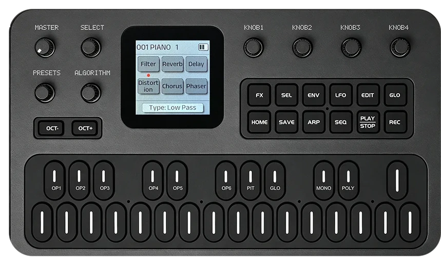
- MASTER: volume geral (0 a 100 na tela). Gire para ouvir ou para baixar o som.
- SELECT: move o cursor pelos controles da página. Com ele você escolhe o que o knob ALGORITHM vai mudar.
- PRESETS: troca o preset (000 a 199). Gire para percorrer os presets; a tela mostra o número e o nome.
- ALGORITHM: muda o valor do controle sob o cursor (um botão de liga/desliga, uma forma de onda, um valor). No diálogo de SAVE, muda a letra do nome.
- KNOB 1 a KNOB 4: os quatro controles da página aberta. Cada um edita a sua coluna diretamente.
- OCT− / OCT+: desce e sobe a oitava das teclas, de −3 a +3.
- A tela: 240 × 240 pixels. Mostra a página, o preset e os pop-ups.
- Os seis botões de página: FX, SCL, ENV, LFO, EDIT, GLO. Cada um abre uma página ou um menu (seção 5).
- Os seis botões de função: HOME, SAVE, ARP, SEQ, PLAY, REC (seções 4, 6, 8 e 9).
- As teclas pretas (sustenidos): tocam o som, como as brancas.
- As teclas brancas: F3 a G5 com as pretas. A nota F3 é a primeira tecla, à esquerda.
- MASTER: overall volume (0 to 100 on the screen). Turn it to hear the sound or to lower it.
- SELECT: moves the cursor over the page's controls. It decides what the ALGORITHM knob changes.
- PRESETS: changes the preset (000 to 199). Turn it to walk through the presets; the screen shows the number and the name.
- ALGORITHM: changes the value of the control under the cursor (an on/off switch, a waveform, a value). In the SAVE dialog it changes the letter of the name.
- KNOB 1 to KNOB 4: the four controls of the open page. Each one edits its column directly.
- OCT− / OCT+: lowers and raises the keys' octave, from −3 to +3.
- The screen: 240 × 240 pixels. It shows the page, the preset and the pop-ups.
- The six page buttons: FX, SCL, ENV, LFO, EDIT, GLO. Each one opens a page or a menu (section 5).
- The six function buttons: HOME, SAVE, ARP, SEQ, PLAY, REC (sections 4, 6, 8 and 9).
- The black keys (sharps): they play the sound, like the white ones.
- The white keys: F3 to G5 with the black ones. F3 is the first key, on the left.
Os botões, um a um
| Botão | Toque (e toque de novo) | Segurar |
|---|---|---|
| FX | Abre a página FX. De novo: percorre os quatro pop-ups de efeito (REVERB, DELAY, CHORUS, DRIVE). | — |
| SCL | Abre OSC. De novo: MIX. No pop-up de DELAY, toca o tempo (tap tempo). | — |
| ENV | Abre F.ENV (envelope do filtro). De novo: A.ENV (envelope do volume). | — |
| LFO | Abre CTRL, onde ficam o LFO e os controladores. | — |
| EDIT | Abre FILT. De novo: PRESET SETTINGS. | — |
| GLO | Abre o menu GLOBAL. Dentro de uma lista, volta um nível. | Vai direto a ABOUT (versão e créditos). |
| HOME | Volta à primeira página (FILT) e fecha os pop-ups. | — |
| SAVE | Abre o diálogo para salvar o preset. De novo: grava. | — |
| ARP | Liga ou desliga o arpejador (o botão acende). Com ele ligado, um toque só abre o pop-up. | Liga ou desliga HOLD do arpejador. |
| SEQ | Abre a grade do sequenciador. | Abre o pop-up de ajustes (MODE, RATE, GATE, TEMPO). |
| PLAY | Toca ou para a sequência. | — |
| REC | Arma ou desarma a gravação no sequenciador (o botão acende). | Apaga a sequência inteira (HOLD REC TO CLEAR). |
| OCT− / OCT+ | Um degrau de oitava para baixo / para cima (limite de −3 a +3). | — |
The buttons, one by one
| Button | Tap (and tap again) | Hold |
|---|---|---|
| FX | Opens the FX page. Again: goes through the four effect pop-ups (REVERB, DELAY, CHORUS, DRIVE). | — |
| SCL | Opens OSC. Again: MIX. In the DELAY pop-up, taps the tempo. | — |
| ENV | Opens F.ENV (the filter envelope). Again: A.ENV (the loudness envelope). | — |
| LFO | Opens CTRL, where the LFO and the controllers are. | — |
| EDIT | Opens FILT. Again: PRESET SETTINGS. | — |
| GLO | Opens the GLOBAL menu. Inside a list, goes back one level. | Goes straight to ABOUT (version and credits). |
| HOME | Back to the first page (FILT) and closes the pop-ups. | — |
| SAVE | Opens the dialog to save the preset. Again: writes it. | — |
| ARP | Turns the arpeggiator on or off (the button lights). With it on, a tap only opens the pop-up. | Turns HOLD of the arpeggiator on or off. |
| SEQ | Opens the sequencer grid. | Opens the settings pop-up (MODE, RATE, GATE, TEMPO). |
| PLAY | Starts or stops the sequence. | — |
| REC | Arms or disarms recording into the sequencer (the button lights). | Clears the whole sequence (HOLD REC TO CLEAR). |
| OCT− / OCT+ | One octave step down / up (limit −3 to +3). | — |
4A tela e a navegaçãoThe screen and navigation
Cada página tem quatro knobs, e alguns têm controles extras (chaves e formas de onda) que nenhum knob alcança. A figura mostra a página CTRL com as áreas numeradas.
Each page has four knobs, and some have extra controls (switches and waveforms) that no knob reaches. The figure shows the CTRL page with its areas numbered.
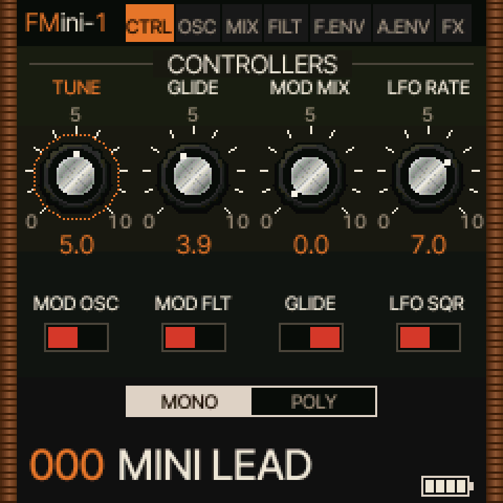
- Barra de páginas: CTRL, OSC, MIX, FILT, F.ENV, A.ENV e FX. A página aberta fica acesa.
- Page bar: CTRL, OSC, MIX, FILT, F.ENV, A.ENV and FX. The open page is lit.
- Título da página ou do pop-up.
- Title of the page or pop-up.
- Os quatro knobs, com nome e valor. O da coluna, na ordem KNOB 1 a KNOB 4.
- The four knobs, with name and value. Column order: KNOB 1 to KNOB 4.
- Controles extras: chaves (a da página CTRL é vermelha, a do MIX é azul; apagada quando desligada) e formas de onda. Alcance com SELECT e mude com ALGORITHM.
- Extra controls: switches (red on CTRL, blue on MIX; dark when off) and waveforms. Reach them with SELECT and change them with ALGORITHM.
- MONO / POLY: o modo de vozes do preset (também em PRESET SETTINGS).
- MONO / POLY: the preset's voice mode (also in PRESET SETTINGS).
- Linha do preset: número e nome. Ela aparece sempre que a tela não mostra um pop-up.
- Preset line: number and name. It shows whenever the screen has no pop-up.
- Bateria: indicador de bateria.
- Battery: battery indicator.
Como o cursor funciona
- KNOB 1 a 4 editam direto. Gire um knob e a coluna dele muda na tela.
- SELECT leva o cursor a cada controle da página, na ordem dos knobs e depois dos extras. O controle com cursor acende o cartão dele.
- ALGORITHM muda o controle sob o cursor. Numa chave: para cima, liga; para baixo, desliga. Numa forma de onda ou num valor, gira o valor.
Os pop-ups
Um pop-up cobre a página por alguns segundos ou até você fechá-lo. Os principais: o do preset (ao girar PRESETS), o da versão (ABOUT), o do MASTER (ao girar MASTER, mostra o volume de 0 a 100 com uma barra), o do arpejador e o da grade do sequenciador. HOME fecha todos.
Este diagrama é um resumo. A tabela da seção 3 tem todos os botões.
How the cursor works
- KNOB 1 to 4 edit directly. Turn a knob and its column changes on the screen.
- SELECT moves the cursor to each control on the page, in knob order and then the extras. The control under the cursor lights its card.
- ALGORITHM changes the control under the cursor. On a switch: up turns it on, down turns it off. On a waveform or a value, it turns the value.
The pop-ups
A pop-up covers the page for a few seconds or until you close it. The main ones: the preset pop-up (when you turn PRESETS), the version (ABOUT), the MASTER pop-up (when you turn MASTER, it shows the volume from 0 to 100 with a bar), the arpeggiator and the sequencer grid. HOME closes them all.
This diagram is a summary. The table in section 3 lists every button.
5As páginasThe pages
Sete páginas, na ordem de um painel de sintetizador: controladores, osciladores, mixer, filtro, envelope do filtro, envelope do volume e efeitos. Abaixo, cada uma com o nome dos seus controles.
Seven pages, in the order of a synth panel: controllers, oscillators, mixer, filter, filter envelope, loudness envelope and effects. Below, each with the names of its controls.
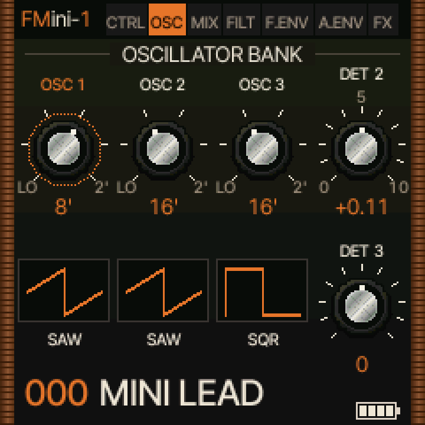
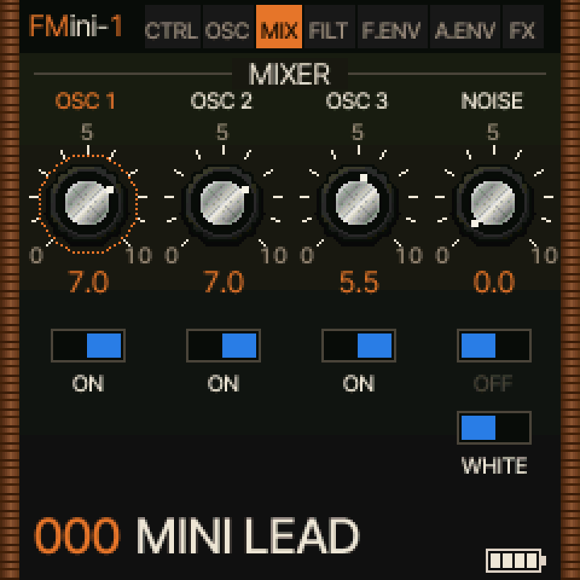
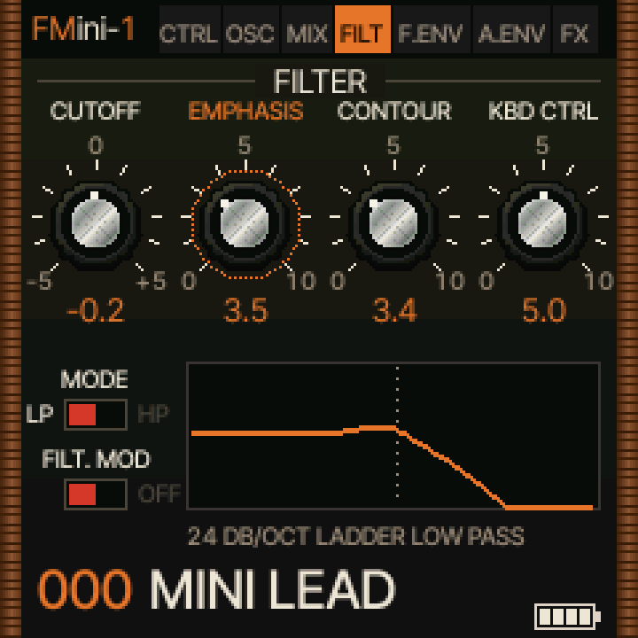
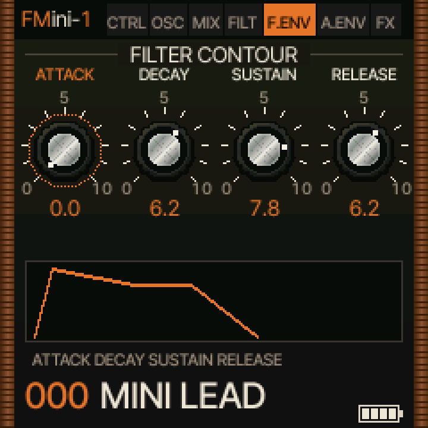
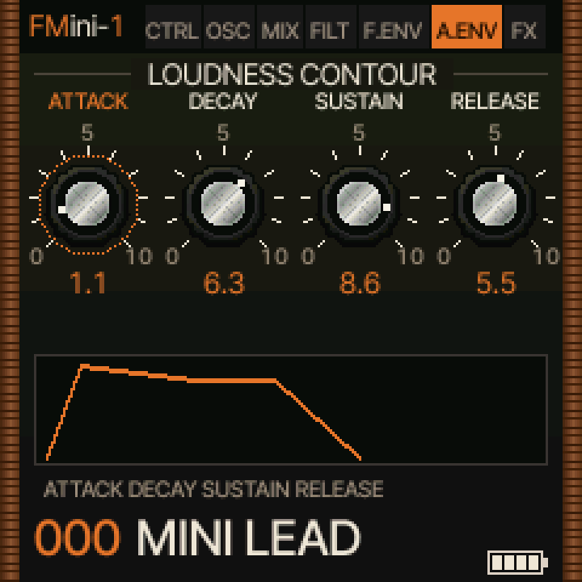
CTRL: controladores e LFO
Onde ficam o LFO e as ligações de modulação. Os knobs da página:
| Controle | O que faz |
|---|---|
| TUNE | Afina o som. O valor aparece na tela em sua escala própria. |
| GLIDE | Tempo do portamento (deslizamento entre notas). Tem a chave GLIDE: liga ou desliga o deslizamento. |
| MOD MIX | Escolhe a fonte de modulação: 0 é o LFO, 127 é o ruído. Os valores entre misturam as duas. |
| LFO RATE | Velocidade do LFO. |
| MOD OSC | Chave: a modulação vai ao pitch dos osciladores (até ±2 semitons). |
| MOD FLT | Chave: a modulação vai ao filtro. |
| LFO SQR | Chave: o LFO vira uma onda quadrada (em vez de senoide ou triângulo). |
| VOICES | MONO ou POLY. É o mesmo ajuste de PRESET SETTINGS: o preset guarda o modo. |
OSC: osciladores
Três osciladores, cada um com oitava (LO, 32', 16', 8', 4', 2'), forma de onda (TRI, SHARK, SAW, SQR, PLS W, PLS N, SIN) e desafino. DET 2 e DET 3 desafinam os osciladores 2 e 3 em relação ao 1, para encorpar o som.
MIX: mixer
Os níveis de OSC 1, OSC 2, OSC 3 e NOISE. Cada um tem uma chave ON/OFF. Na coluna NOISE, a chave (OFF / WHITE) liga o ruído branco e a chave PINK troca para o rosa. Com MOD MIX (CTRL) o ruído pode entrar na modulação.
FILT: filtro
| Controle | O que faz |
|---|---|
| CUTOFF | Frequência de corte do filtro ladder. |
| EMPHASIS | Ressonância: realce perto do corte. |
| CONTOUR | Quanto o envelope do filtro (F.ENV) empurra o corte. |
| KBD CTRL | Quanto o corte acompanha o teclado (0 = nenhum; 127 = total). |
| LP / HP | Chave: passa-baixas (LP, o padrão) ou passa-altas (HP). |
| FILT. MOD | Chave: o LFO (ou a fonte de MOD MIX) mexe no corte. |
F.ENV e A.ENV: envelopes
F.ENV (FILTER CONTOUR) é o envelope do filtro: ATTACK, DECAY, SUSTAIN e RELEASE. A.ENV (LOUDNESS CONTOUR) é o do volume, com os mesmos quatro parâmetros. Ataque, decaimento e sustentação são níveis e tempos; o release vale depois que a tecla é solta.
FX: efeitos
A página FX mostra os quatro efeitos (REVERB, DELAY, CHORUS, DRIVE) com o knob de mistura de cada um. Cada efeito abre um pop-up com quatro knobs (o de mistura, o tipo e os dois parâmetros do efeito). Por exemplo, DELAY tem TYPE (ANALOG, entre outros), TIME (em milissegundos ou em frações do tempo), e FEEDBK. REVERB tem TYPE (como HALL), DECAY e TONE. CHORUS tem DEPTH e RATE. DRIVE tem GAIN e TONE.
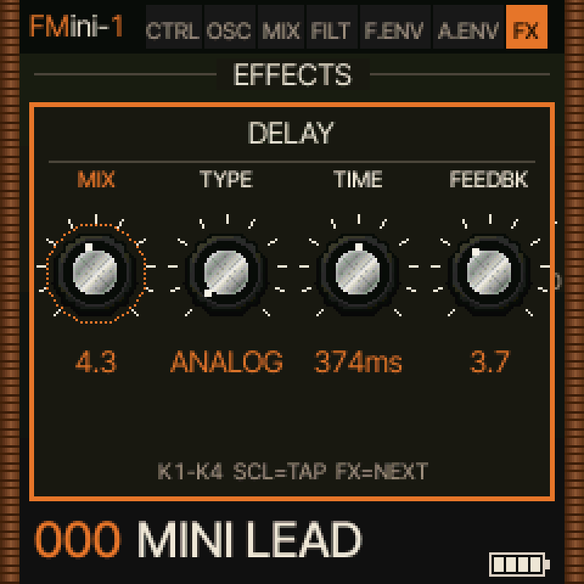
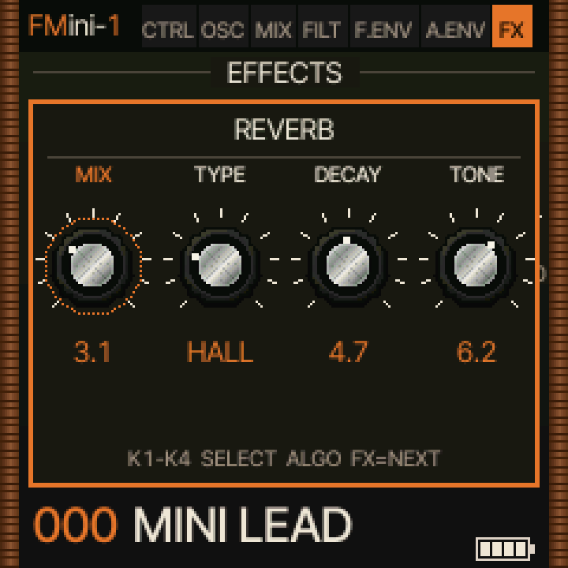
Pressione FX de novo para percorrer os pop-ups, e SCL, no pop-up de DELAY, para tocar o tempo.
PRESET SETTINGS
Aperte EDIT duas vezes (a primeira abre FILT). Guarda as opções do próprio preset:
| Opção | O que faz |
|---|---|
| VOLUME | Volume do preset, de 0 a 127. Ele é o nível que o preset tem antes do MASTER. |
| MODE | MONO ou POLY. Vale o que está salvo no preset. |
| PITCH BEND | Alcance da roda de pitch: ±2, ±12, +2/−12 ou +2/−24 semitons. |
| MOD WHEEL | O que a roda de modulação faz no preset. |
| VELOCITY SENS. | Liga ou desliga a sensibilidade à força da tecla (ON / OFF). |
CTRL: controllers and LFO
Where the LFO and the modulation routing are. The page's knobs:
| Control | What it does |
|---|---|
| TUNE | Tunes the sound. The value shows on the screen on its own scale. |
| GLIDE | Glide time (the slide between notes). It has the GLIDE switch: turns the glide on or off. |
| MOD MIX | Chooses the modulation source: 0 is the LFO, 127 is the noise. The values in between mix the two. |
| LFO RATE | LFO speed. |
| MOD OSC | Switch: the modulation goes to the oscillators' pitch (up to ±2 semitones). |
| MOD FLT | Switch: the modulation goes to the filter. |
| LFO SQR | Switch: the LFO becomes a square wave (instead of a sine or triangle). |
| VOICES | MONO or POLY. It is the same setting as PRESET SETTINGS: the preset stores the mode. |
OSC: oscillators
Three oscillators, each with a range (LO, 32', 16', 8', 4', 2'), a waveform (TRI, SHARK, SAW, SQR, PLS W, PLS N, SIN) and detuning. DET 2 and DET 3 detune oscillators 2 and 3 against 1, to thicken the sound.
MIX: mixer
The levels of OSC 1, OSC 2, OSC 3 and NOISE. Each has an ON/OFF switch. In the NOISE column, the switch (OFF / WHITE) turns white noise on and the PINK switch changes it to pink. With MOD MIX (CTRL) the noise can enter the modulation.
FILT: filter
| Control | What it does |
|---|---|
| CUTOFF | Cutoff frequency of the ladder filter. |
| EMPHASIS | Resonance: a boost near the cutoff. |
| CONTOUR | How much the filter envelope (F.ENV) pushes the cutoff. |
| KBD CTRL | How much the cutoff follows the keyboard (0 = none; 127 = full). |
| LP / HP | Switch: low-pass (LP, the default) or high-pass (HP). |
| FILT. MOD | Switch: the LFO (or the MOD MIX source) moves the cutoff. |
F.ENV and A.ENV: envelopes
F.ENV (FILTER CONTOUR) is the filter envelope: ATTACK, DECAY, SUSTAIN and RELEASE. A.ENV (LOUDNESS CONTOUR) is the volume envelope, with the same four parameters. Attack, decay and sustain are levels and times; the release runs after the key is let go.
FX: effects
The FX page shows the four effects (REVERB, DELAY, CHORUS, DRIVE) with each one's mix knob. Each effect opens a pop-up with four knobs (the mix, the type and the effect's two parameters). For example, DELAY has TYPE (ANALOG, among others), TIME (in milliseconds or in fractions of the tempo) and FEEDBK. REVERB has TYPE (such as HALL), DECAY and TONE. CHORUS has DEPTH and RATE. DRIVE has GAIN and TONE.
Press FX again to go through the pop-ups, and SCL, in the DELAY pop-up, to tap the tempo.
PRESET SETTINGS
Press EDIT twice (the first opens FILT). It holds the preset's own options:
| Option | What it does |
|---|---|
| VOLUME | The preset's volume, 0 to 127. It is the level the preset has before MASTER. |
| MODE | MONO or POLY. The saved preset decides it. |
| PITCH BEND | Range of the pitch wheel: ±2, ±12, +2/−12 or +2/−24 semitones. |
| MOD WHEEL | What the modulation wheel does in the preset. |
| VELOCITY SENS. | Turns the sensitivity to key velocity on or off (ON / OFF). |
6Presets
Um preset guarda o som inteiro: osciladores, mixer, filtro, envelopes, LFO, efeitos, o modo MONO/POLY e as opções de PRESET SETTINGS. Há 200 presets, de 000 a 199.
Trocar de preset
- Gire PRESETS. A tela mostra o número e o nome do preset.
- Pare. O preset carrega quando o pop-up some, e o som muda.
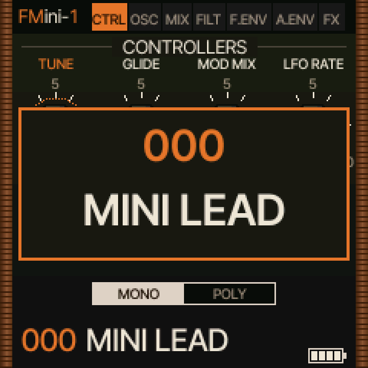
Salvar um preset
- Mexa no som como quiser, na página que for.
- Aperte SAVE. Abre o diálogo SAVE PRESET.
- Escolha o slot com PRESETS. Se o slot já tem um preset, o diálogo diz OVERWRITE.
- Mude o nome: SELECT anda pelas letras, ALGORITHM troca a letra.
- Aperte SAVE de novo para gravar. Qualquer outro botão de página cancela.
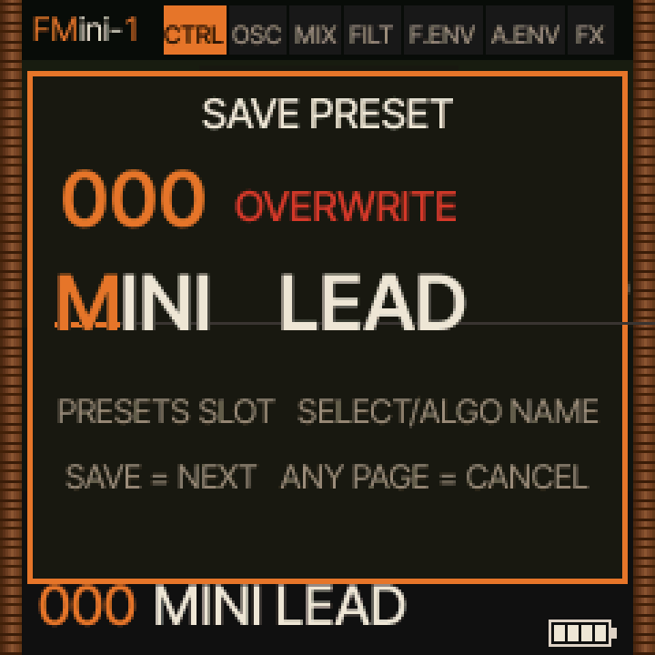
A preset stores the whole sound: oscillators, mixer, filter, envelopes, LFO, effects, the MONO/POLY mode and the PRESET SETTINGS options. There are 200 presets, from 000 to 199.
Changing preset
- Turn PRESETS. The screen shows the preset's number and name.
- Stop. The preset loads when the pop-up goes away, and the sound changes.
Saving a preset
- Change the sound however you like, on any page.
- Press SAVE. The SAVE PRESET dialog opens.
- Choose the slot with PRESETS. If the slot already holds a preset, the dialog says OVERWRITE.
- Change the name: SELECT moves along the letters, ALGORITHM changes the letter.
- Press SAVE again to write. Any other page button cancels.
7GLO
GLO abre o menu GLOBAL, com as configurações do aparelho (não do preset). Gire para ir de linha em linha e aperte um knob ou gire-o para entrar.
| Linha | O que faz |
|---|---|
| MIDI SETTINGS | Canais e modos de MIDI (veja abaixo). |
| TUNING | Afinação de referência do aparelho (440 Hz por padrão). |
| TRANSPOSE | Transpõe o teclado em semitons. |
| NOTE PRIORITY | Qual nota vale quando você toca mais de uma em MONO: LAST (a última tocada, o padrão), LOW (a mais grave) ou HIGH (a mais aguda). |
| FACTORY RESET | Volta aos presets de fábrica e às configurações globais. Pede confirmação. |
| SUPPORT FMINI-1 | Como apoiar o projeto. |
| ABOUT | Versão do firmware e créditos. Também se abre segurando GLO por meio segundo. |
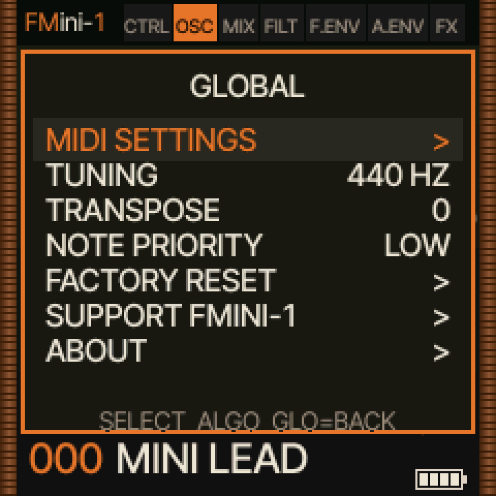
MIDI
Em GLO, MIDI SETTINGS: MIDI IN (de onde vêm as notas: USB, o MIDI, ou ambos), MIDI OUT CH e MIDI IN CH (canais, de 1 a 16), MIDI IN CC (aprende e envia os CCs dos controles), MIDI CLOCK (sincronia de tempo: desligado, USB ou TRS) e MIDI IN MONITOR (mostra as últimas mensagens recebidas).
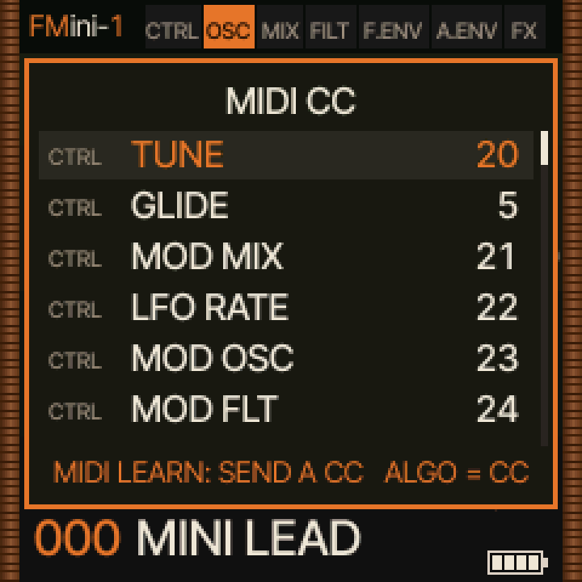
GLO opens the GLOBAL menu, with the unit's settings (not the preset's). Turn to move line by line; press or turn a knob to go in.
| Line | What it does |
|---|---|
| MIDI SETTINGS | MIDI channels and modes (see below). |
| TUNING | The unit's reference tuning (440 Hz by default). |
| TRANSPOSE | Transposes the keyboard in semitones. |
| NOTE PRIORITY | Which note counts when you play several in MONO: LAST (the last one played, the default), LOW (the lowest) or HIGH (the highest). |
| FACTORY RESET | Back to the factory presets and the global settings. It asks for confirmation. |
| SUPPORT FMINI-1 | How to support the project. |
| ABOUT | Firmware version and credits. Also opens by holding GLO for half a second. |
MIDI
In GLO, MIDI SETTINGS: MIDI IN (where notes come from: USB, the MIDI jack, or both), MIDI OUT CH and MIDI IN CH (channels, 1 to 16), MIDI IN CC (learns and sends the CCs of the controls), MIDI CLOCK (tempo sync: off, USB or TRS) and MIDI IN MONITOR (shows the last messages received).
8ARP
O arpejador toca as notas que você segura, uma de cada vez, em ordem. Toque ARP para ligar; a tela mostra o pop-up com as opções.
| Opção | O que faz |
|---|---|
| MODE | A ordem das notas: UP (para cima), DN (para baixo), UPDN, RND (aleatória), ORD (na ordem de toque) e as outras da lista. |
| RATE | Divisão do tempo de cada nota (1/4, 1/8, 1/16, 1/32, e as versões em tercinas e pontuadas). |
| OCTAVES | Quantas oitavas o arpejo cobre. |
| GATE | Quanto de cada nota soa: valor maior, notas mais longas e mais ligadas. |
| HOLD | Mantém o arpejo tocando depois que você solta as teclas. Segure ARP para ligar ou desligar. |
| TEMPO | BPM. É o tempo do preset. |
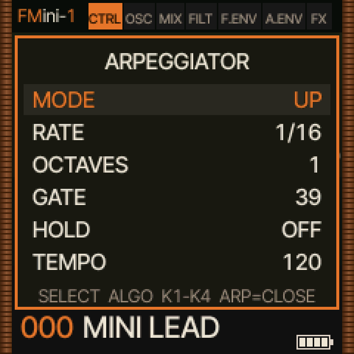
The arpeggiator plays the notes you hold, one at a time, in order. Tap ARP to turn it on; the screen shows the pop-up with the options.
| Option | What it does |
|---|---|
| MODE | The order of the notes: UP, DN, UPDN, RND (random), ORD (the order you played them) and the others in the list. |
| RATE | The time division of each note (1/4, 1/8, 1/16, 1/32, and the triplet and dotted versions). |
| OCTAVES | How many octaves the arpeggio covers. |
| GATE | How much of each note sounds: a higher value, longer and more connected notes. |
| HOLD | Keeps the arpeggio playing after you let the keys go. Hold ARP to turn it on or off. |
| TEMPO | BPM. It is the preset's tempo. |
9SEQ, PLAY, REC
O sequenciador grava até 64 passos de notas. A grade tem os passos; cada passo guarda a nota e o seu tempo.
- Aperte SEQ para abrir a grade. Ela mostra a palavra SEQUENCER por meio segundo.
- Aperte REC para armar a gravação (o botão acende). As notas que você tocar entram nos passos, em ordem.
- Aperte PLAY para tocar a sequência. De novo, para.
- Para apagar tudo, segure REC por 0,7 s (HOLD REC TO CLEAR).
- Ajustes: segure SEQ por 0,45 s. O pop-up tem MODE, RATE, GATE e TEMPO.
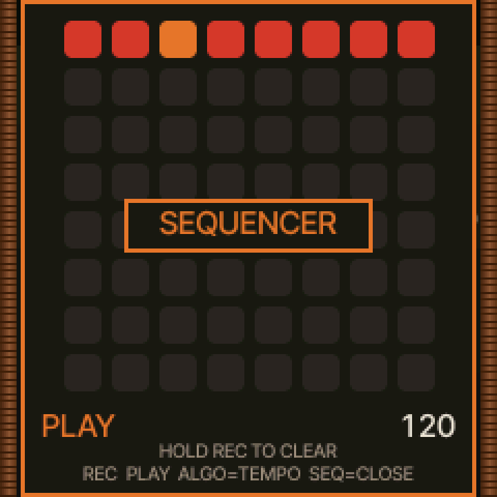
The sequencer records up to 64 steps of notes. The grid holds the steps; each step keeps its note and its timing.
- Press SEQ to open the grid. It shows the word SEQUENCER for half a second.
- Press REC to arm recording (the button lights). The notes you play go into the steps, in order.
- Press PLAY to play the sequence. Press it again to stop.
- To clear everything, hold REC for 0.7 s (HOLD REC TO CLEAR).
- Settings: hold SEQ for 0.45 s. The pop-up has MODE, RATE, GATE and TEMPO.
10Diagrama do sinalSignal flow
Do teclado à saída. As setas laranja são o caminho do som; as azuis tracejadas são as modulações.
From the keys to the output. Orange arrows are the sound's path; the blue dashed ones are modulation.
11DúvidasQuestions
Não ouço nada
- Suba o MASTER (a tela mostra 0 a 100).
- Confira se a mixagem tem níveis: na página MIX, os OSC 1–3 devem ter nível e a chave ON.
- Confira o filtro: um CUTOFF baixo com EMPHASIS baixo abafa o som.
- Veja o A.ENV: um SUSTAIN de zero dá um som que some depois do ataque.
O preset soa diferente de como eu lembro
Presets e configurações de versões antes de 1.7.0 guardam alguns valores com outro significado (CUTOFF e EMPHASIS, principalmente). Um preset do usuário dessas versões soa diferente hoje. Os presets de fábrica foram convertidos para o som atual.
Uma nota fica presa, ou o som não para
Em MONO, a prioridade de notas está em GLO > NOTE PRIORITY. Com ARP em HOLD, o arpejo continua até você desligá-lo: segure ARP.
O MIDI não responde
Confira MIDI IN (USB, MIDI ou ambos) e os canais em GLO > MIDI SETTINGS. Com MIDI IN MONITOR você vê se as mensagens chegam.
I hear nothing
- Raise MASTER (the screen shows 0 to 100).
- Check the mix levels: on the MIX page, OSC 1–3 need a level and the switch ON.
- Check the filter: a low CUTOFF with a low EMPHASIS dulls the sound.
- Check A.ENV: a SUSTAIN of zero makes the sound die after the attack.
The preset sounds different from how I remember it
Presets and settings from versions before 1.7.0 store some values with another meaning (CUTOFF and EMPHASIS, mainly). A user preset from those versions sounds different now. The factory presets were converted to the current sound.
A note sticks, or the sound does not stop
In MONO, note priority is in GLO > NOTE PRIORITY. With ARP on HOLD, the arpeggio keeps playing until you turn it off: hold ARP.
MIDI does not respond
Check MIDI IN (USB, MIDI or both) and the channels in GLO > MIDI SETTINGS. MIDI IN MONITOR shows whether the messages arrive.
CréditosCredits
FMini-1 foi feito por Guilherme Ruppert, um fork do Felucca de Leo Kuroshita (Hügelton Instruments), sob GPL-3.0. O código e os créditos completos estão no repositório.
FMini-1 was made by Guilherme Ruppert, a fork of Felucca by Leo Kuroshita (Hügelton Instruments), under GPL-3.0. The code and the full credits are in the repository.